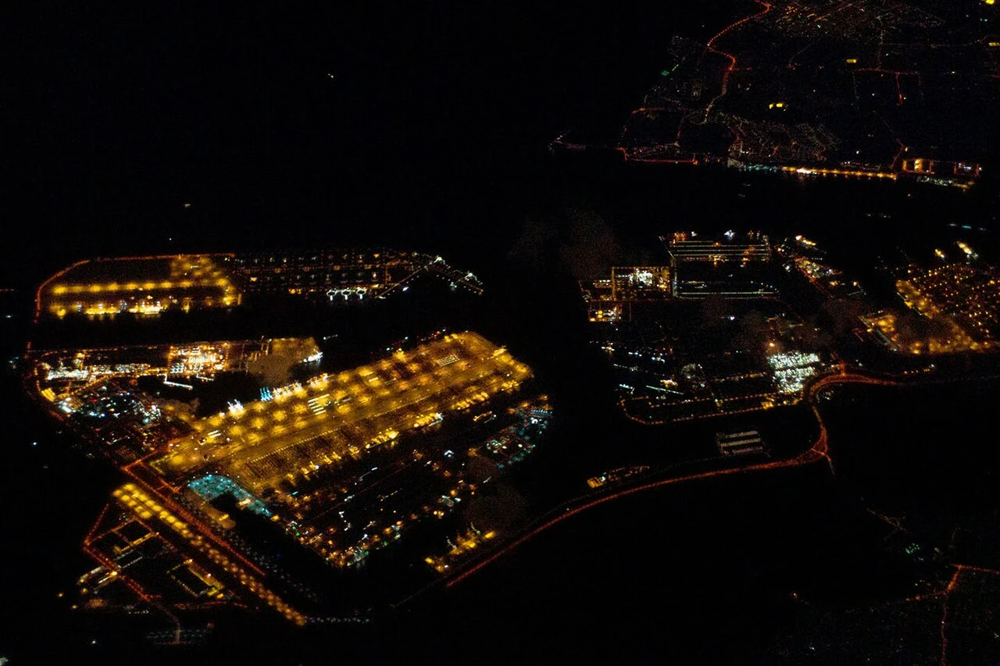

Fall 2026 / Tsinghua SIGS
Introduction toSmart Logistics
Explore six logistics assignments through anonymized student work, then follow a parcel through SF Express’s Shenzhen air hub.
Browse sessions
Course sessions
Sep – Nov 2026- 01 Digital supply chainsProf. Wai Kin (Victor) Chan What turns a forecast into a purchasing decision?
- 02 Transportation and distributionProf. Mingyao Qi When is the nearest courier the wrong choice?
- 03 Intelligent warehousingProf. Peng Yang How long can a picker wait to combine two orders?
- 04 SF Express in ShenzhenField visit with Prof. Wai Kin (Victor) Chan How does a parcel find the chute for its next flight?
- 05 High-accuracy positioningProf. Kai Zhang Can an accurate pickup pin already be out of date?
- 06 Instant delivery by droneProf. Xinlei Chen How does the meal get from the landing station to the customer?
- 07 Container terminal operationsProf. Canrong Zhang Where does the queue go after a crane speeds up?
About the course and its sources
Prof. Wai Kin (Victor) Chan leads Introduction to Smart Logistics at Tsinghua Shenzhen International Graduate School. The class studies how people and equipment work together to move, store and deliver goods.
The lecture pages bring together anonymous themes from the submitted assignments. The October field notes draw on the written account of the class trip. The worked exercises use illustrative values.
Cover photograph of Maasvlakte, Rotterdam, by SkywalkerPL. Cropped and resized under CC BY 3.0.